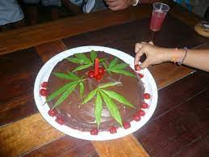

- Ingredientes para fazer um bolo de maconha :)
- 90 gramas de manteiga de maconha
- 4 ovos
- 2 xícaras de açúcar
- 1 xícara de leite
- 2 xícaras de farinha
- 1 colher de sopa de fermento químico
- Essência de baunilha (opcional)
- 2 colheres de chocolate ou cacau em pó (opcional)